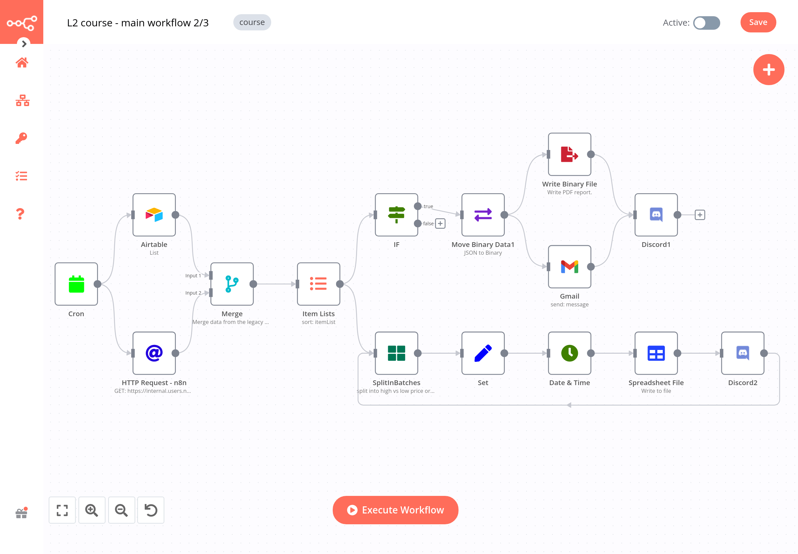

Projets Réalisés
Voici quelques projets significatifs sur lesquels j'ai travaillé, démontrant mon expertise dans différents domaines de l'IA et de l'informatique.

Système d'automatisation pour créateurs de contenu
Mise en place d'un système complet d'automatisation permettant à des créateurs de contenu de générer, planifier et publier du contenu sur différentes plateformes à partir d'une seule interface.

Base de connaissances intelligente
Développement d'une base de connaissances utilisant des technologies vectorielles pour permettre à une entreprise de consulter rapidement sa documentation technique via des requêtes en langage naturel.

Pipeline de génération d'images pour e-commerce
Création d'un workflow automatisé permettant à une boutique en ligne de générer des visuels de produits dans différents contextes et styles à partir d'une seule image source.